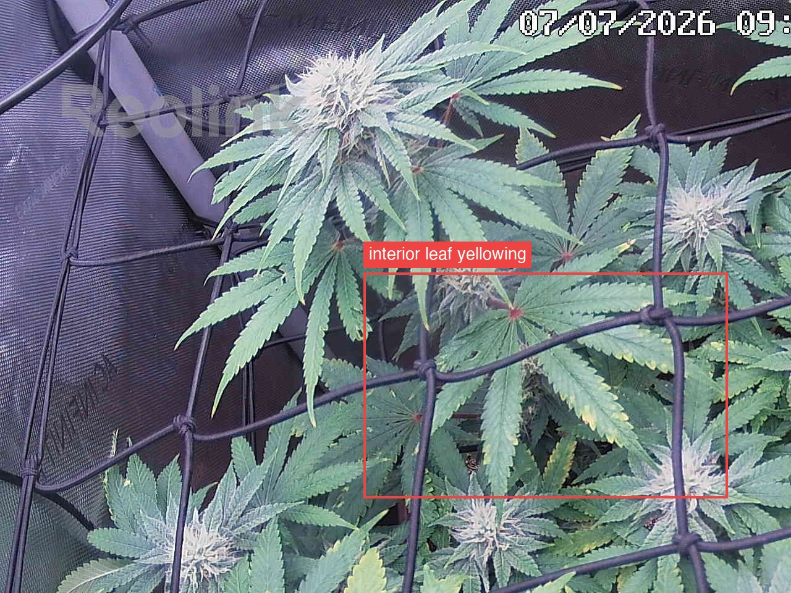
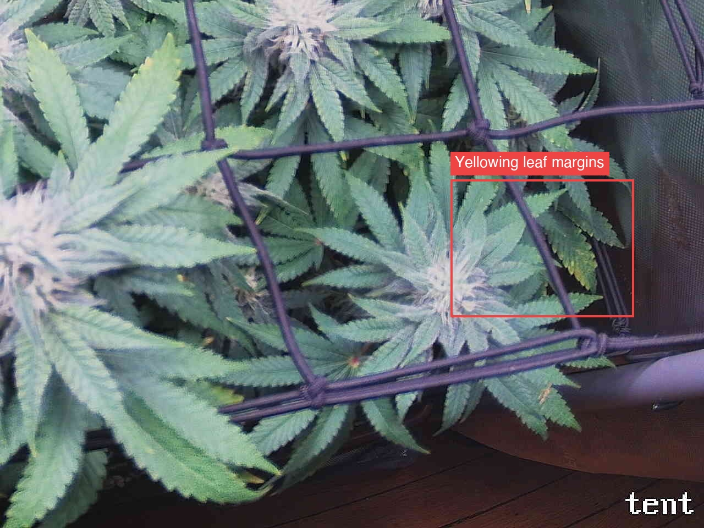

Per-quadrant analysis — the canopy shot was split into a 2x2 grid and each region compared against the previous day.
Overall the plant is healthy and on-track for progressing flower (~day 34): all four quadrants show canopy fill-in, denser/frostier swelling tops, and deep-green new growth with no stall, pests, mold, PM, droop, tacoing, or bleaching. The day-over-day trend (7/02→7/07) is positive on bud development but the interior/older-leaf yellowing is the one negative vector — Top-left is marked ATTENTION for yellowing that has moved beyond tip/margin into blade involvement on a few interior leaves, and Bottom-right is marked ATTENTION for new/slightly more pronounced yellow margins on shaded right-side fan leaves near the wall; Top-right and Bottom-left show the same yellowing but tip/margin-limited and stable, so the symptom is present plant-wide and mildly advancing only in the two flagged quadrants. Cause is not determinable from a top-down photo (candidates span normal late-flower N reclamation/senescence, K, or Mg), and the tops-spared/older-leaves-first pattern is consistent with benign mid-flower fade — but note that a top-down view under-represents shaded interior leaves, so severity may be worse than tiles show. Single most important action: no amendment yet — closely monitor whether the yellowing climbs from older/interior leaves into the upper canopy or new growth over the next check-in, which would be the trigger to escalate.
Bud sites (whole plant, estimate): 15-24

Bud sites: 4-7
07 this run, so I am not prescribing an amendment, only citing the medium constraint.Bud sites: 4-6

Bud sites: 3-5